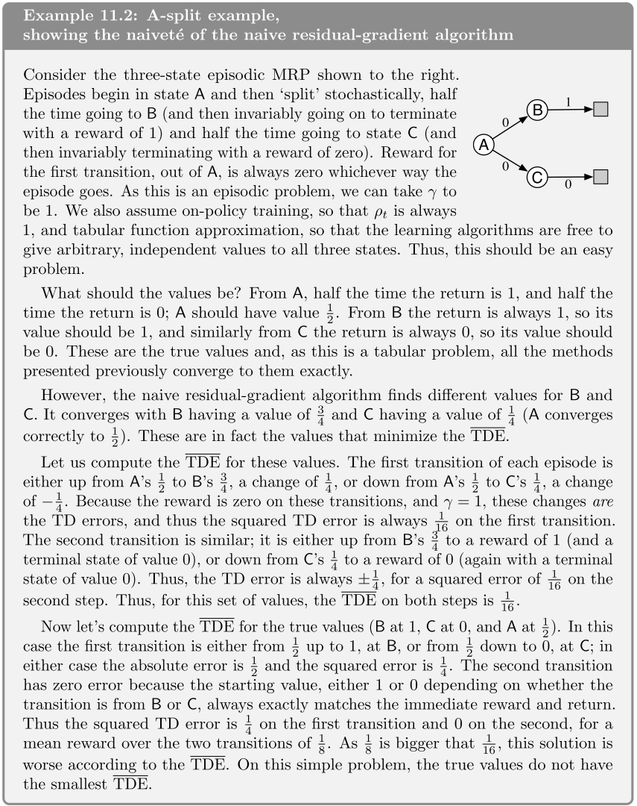
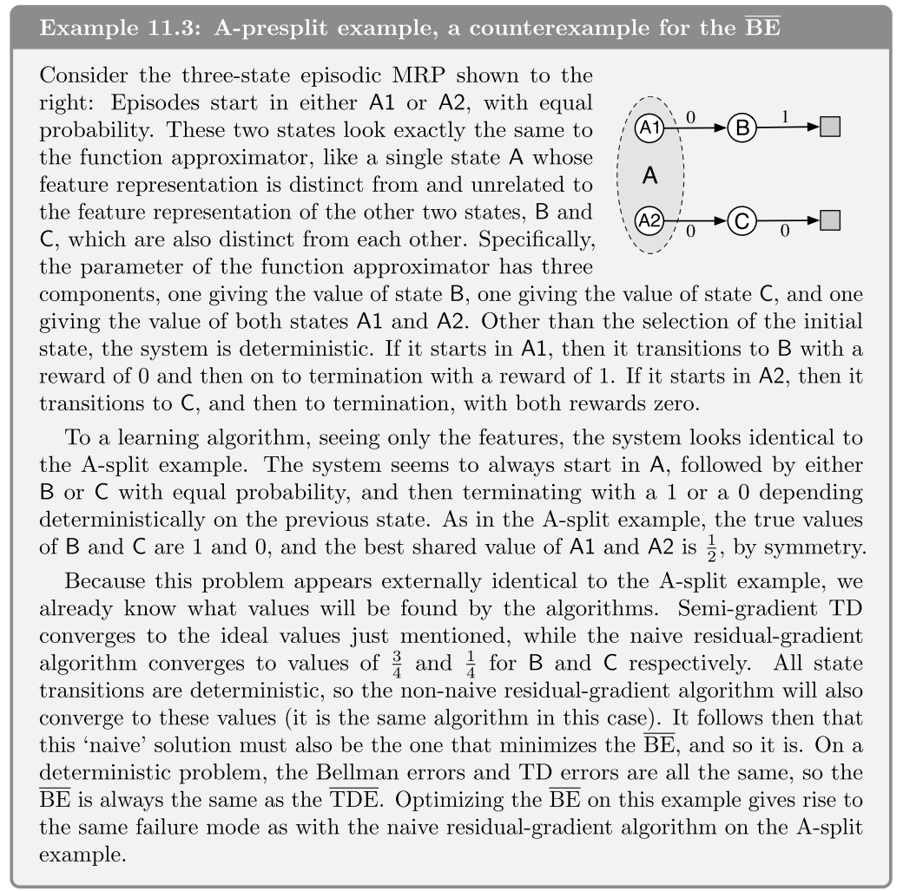
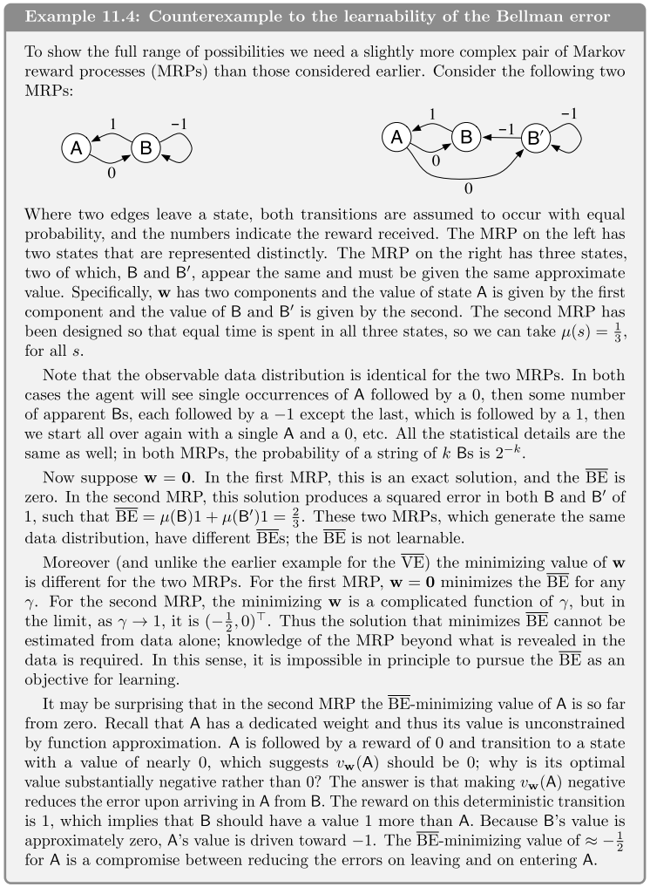
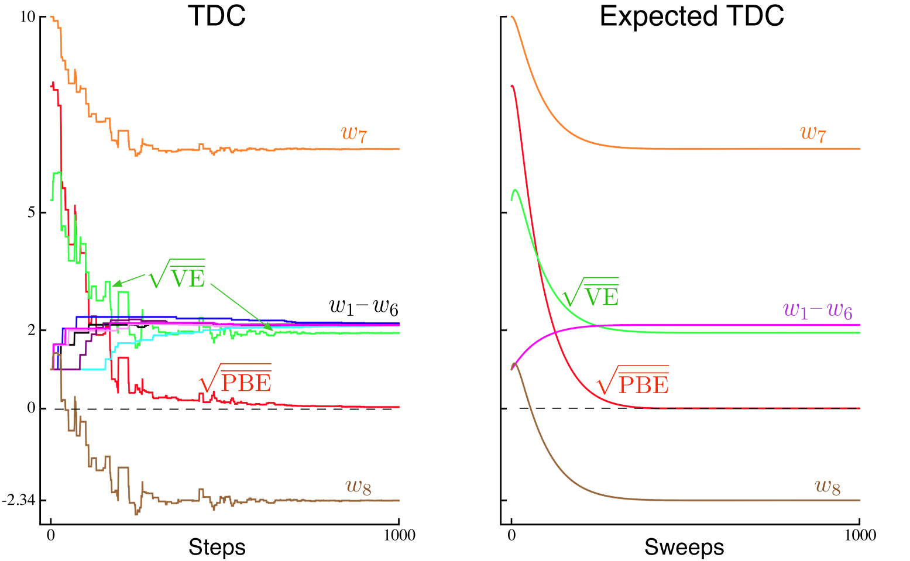
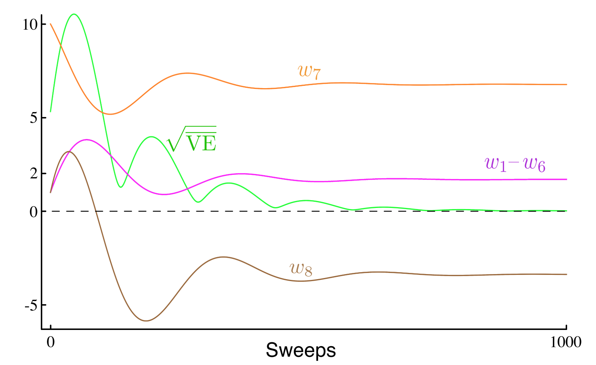

强化学习导论（十一）- 离线策略的近似方法¶
前两章（9、10 章）已经讲了on-policy 情形下对于函数近似的拓展，本章继续讲解 off-policy 下对函数近似的拓展，但是这个拓展比on-policy时更难更不同。
在第六第七章中讲到的 off-policy 方法可以拓展到函数近似的情况下，但是这些方法在半梯度法下不能像在 on-policy 下一样良好地收敛。
Off-policy 在函数逼近时有两大难点：
-
update target 发生变化。这个问题之前已通过 importance sampling 解决。
-
update distribution 发生变化，已不再是原先的 on-policy distribution。
要解决上述的第二个难点，有两种方法：
- 通过之前讲的 importance sampling 将 update distribution 转变为 on-policy distribution 。
- 提出一种不依赖任何特定分布的 true gradient 方法。
11.1 Semi-gradient Methods¶
这一节主要目的是将 off-policy 下的查表法改造为梯度 / 半梯度法，主要针对第一个难点（变化的 update target）。大多数情况下，这个方法表现良好，少数情况存在发散的情况。
这些算法大多数采用了『单步重要性比例』：
semi-gradient off-policy TD(0)¶
其中
- episodic and discounted problem:
- continuing and undiscounted problem:
semi-gradient Expected Sarsa¶
其中
- episodic and discounted problem:
- continuing and undiscounted problem:
这里梯度更新并未使用 importance sampling ，后面会解释。
上面都是针对单步算法，而对于多步算法，无论是 state value 还是 action value ，都需要做 importance sampling 。
n-step semi-gradient Expected Sarsa¶
其中
- episodic and discounted problem:
- continuing and undiscounted problem:
n-step semi-gradient tree-backup¶
第七章还讲过一种不需要 importance sampling 的算法：tree-backup 算法，其半梯度法如下：
11.2 Examples of Off-policy Divergence¶
从本节开始讨论第二类难点，也就是 update distribution 不再是 on-policy distribution 。本节主要是讲了 off-policy 下使用半梯度法导致不稳定或不收敛的反例。
例子的具体情况略过，其结论是，参数 \mathbf{w} 更新的稳定性与步长参数 \alpha 无关，只需大于 0 即可，而其值的大小只影响参数 \mathbf{w} 发散的速度，而非是否发散。
本例的一个特殊点是，它一直在重复一个状态转移来更新 \mathbf{w} （这也是实际中可能发生的情况），因为 behavior policy 可能会选择 target policy 永远不会选择的那些 action（此时 \rho_t=0 ，权重得不到更新）。
还有一个反例——Baird's counterexmaple ，这个例子主要是在说，bootstrapping 和 semi gradient 在非 on-policy 下结合时，会导致发散。
Q-learning 往往是收敛性最好的算法，但仍有使用 Q-learning 也发散的反例，一个解决方案是使 behavior policy 与 target policy 尽量接近（比如将 behavior policy 设为 target policy 的 \varepsilon-greedy policy ）。
11.3 The Deadly Triad¶
上一节对存在不稳定性的情况举了例子，本节再来做一个归纳总结。
导致不稳定性有三个主要因素，称其为『致命三因素（The Deadly Triad）』：
- Function Approximation
- Bootstrapping
- Off-policy training
结论：『当三者同时出现，会导致系统不稳定；只出现两个时则可避免不稳定性。』
关于三者的取舍情况，首先 function approximation 最需要保留，他能够使我们的算法得到足够的扩展和延伸，变得更有泛化能力。
而 bootstrapping 是可以考虑放弃掉的，但代价是牺牲计算效率和数据利用率（bootstrapping 可以利用终止状态之前的数据来进行中途学习，所以效率高）。
最后， off-policy 能够将行为从目标函数分隔开，能够带来一定程度上的便利，但并非是必须的。不过若想要『并行学习』，则一定要使用 off-policy 。
11.4 Linear Value-function Geometry¶
为了更好理解 off-policy learning 的一些问题，考虑对函数逼近做一些抽象的分析。
设状态空间中的 state-value function 为映射 v:S\to R （大部分的 v 函数并没有具体意义，即不对应任何具体的 policy ） 。
记状态空间为 \mathcal S=\{s_1,s_2,\ldots,s_{|\mathcal S|}\} ，value function 则为向量 [v(s_1),v(s_2),\ldots,v(s_{|\mathcal S|})]^T 。
简化起见，设 \mathcal S=\{s_1,s_2,s_3\} ，参数 \mathbf{w}=(w_1,w_2)^T ，此时 value function [v(s_1),v(s_2),v(s_3)]^T 可看作一个三维空间中的点。而参数 \mathbf{w} 则能够通过一个二维子空间提供一个替代的坐标系，其线性组合而成的逼近函数 v_{\mathbf{w}} 显然也在这个子空间内。
下图是一个状态空间的示例，一些具体的含义会逐渐通过后续的小节来解释。

给定一个策略 \pi ，其对应的 v_\pi 可能较复杂，因此难以被参数的线性组合表示出来，故 v_\pi 可能在参数化的子平面外，而 approximation 要做的事情，就是在这个子平面中找到最接近离真实 v_\pi 最近的逼近函数 v_\mathbf{w} 。
为了衡量 value function 之间的距离，这里定义一个距离
将 value function 投影到子空间最近函数的运算定义为算子 \Pi ：
对于一个线性估计而言，投影算子可表示为矩阵（下式之中若不可求逆，则用伪逆）
\mathbf{D} 为分布 \mu(s) 的对角矩阵形式，\mathbf{X} 则由特征向量组成
使用这两个矩阵，还可以改写出 ||v||_\mu^2=v^T\mathbf{D}v ，v_\mathbf{w}=\mathbf{Xw} 。
回想之前求解 Bellman 方程
若将 v_\mathbf{w} 用以替代 v_\pi ，显然等号不再成立，于是可定义 Bellman Error (BE)：
易观察知，Bellman error 其实就是 TD error 的期望值。
可定义 Mean Squared Bellman Error： \mathrm{MSBE}(\mathbf{w})=||\bar{\delta}_\mathbf{w}||_\mu^2 。从图 11.3 易知，线性逼近无法使 MSBE 减小至 0（需要 v_\mathbf{w}=v_\pi ），后面两节会介绍如何最小化这个 MSBE 。
为简化描述，定义 Bellman 算子 B_\pi:\mathbb{R}^{|\mathcal S|}\to \mathbb{R}^{|\mathcal S|} ，将 Bellman 方程记作算子形式：
此时可将 Bellman error 记作 \bar{\delta}_\mathbf{w}=B_\pi v_\mathbf{w}-v_\mathbf{w} 。
B_\pi 能够产生子空间外新的 value function ，不断作用于 value function ，这有点类似 DP 法，它能够最终收敛到想要的 v_\pi ，如图 11.3 中所示。
同样可以将 Bellman error 投影到参数子空间，得到 \Pi \bar{\delta}_{v_\mathbf{w}} ，此时可定义 Mean Square Projected Bellman Error：
对于线性逼近而言，这时显然就可以在子空间内找到使 MSPBE 为 0 的最优点了，这个点恰好就是前面讲过的 TD 不动点。
11.5 Gradient Descent in the Bellman Error¶
前一节介绍了多种目标函数（MSVE、MSBE、MSPBE 等），这一节回到 off-policy learning 问题。
若想使这些目标函数最小化，一般考虑 SGD 来处理，但前面讲过，只有 MC 才是 true SGD ，此时无论是 on-policy 还是 off-policy 其收敛性都很鲁棒，只不过收敛速度较半梯度法稍慢，而半梯度法则在 off-policy 训练中容易发散，且不太适合用于非线性逼近，true SGD 就不存在这种问题。
11.5 & 11.6 节以 Bellman error 为目标函数来做优化，不过需要先说明的是，这种算法其实并不好，它的失败之处其实很有意思，能够为我们找到好方法提供思路。
首先，在以前的 TD 法中定义过一个 TD error：\delta_t=R_{t+1}+\gamma\hat{v}(S_{t+1},\mathbf{w}_t)-\hat{v}(S_t,\mathbf{w}_t) ，但并未以它为优化目标来研究过，于是定义『均方 TD error』：
此时的 SGD 更新式为
这是一个 true SGD 法，称其为『naive residual-gradient 算法』。此方法虽然收敛性很鲁棒，但其实它收敛到的值并不是理想值，下面的一个例子具体地展现了这一点（真实最优解的 MSTDE 反而更大）。

另一个更好的想法是优化 Bellman error，也就是 TD error 的期望，称该算法为『residual gradient 算法』其更新式为

从中看出，此更新式中有两个含有 S_{t+1} 的期望式，为保证无偏性，这两个 S_{t+1} 应该是独立的，所以需要在每一步都采两个样本，如果环境是确定性的，那么采取同一 action 后 S_t\to S_{t+1} 的过程便是确定的，两处的 S_{t+1} 也必然是相同值，故做一次采样即可；但若是非确定性的环境，则必须采两次样，这在真实环境中无法做到（一旦和环境交互就已确定，不可回退），只能在模拟环境中通过回退再次模拟来实现。
这个算法是 true SGD，故也有较强的收敛性，但有三个缺点：
- 比半梯度法慢
- 可能收敛到错误值（如例 11.3 所示）
- 可能不收敛（下一节讲）

11.6 The Bellman Error is Not Learnable¶
本节的『可学习（learnable）』与传统机器学习中的 learnable 定义（能够在多项式复杂度下有效地学习）不同，在强化学习中，若一些量在给定内部结构、知识等信息后可以计算，但通过观测得到的序列却无法计算或估计出来，则称这些量是不可学习的。

上面的例子中，两个不同的问题却有可能产生出相同的观测序列。若设 \gamma = 0 ，三个 state 的 true value 应为 1、0、2 ，若设 w=1 ，则左图的 MSVE 为 0 ，右图的 MSVE 为 1 。同样的观测序列，对应的理论 MSVE 值却不同，说明如果不给出问题背景，就无法学出正确对应的 MSVE ，因此 MSVE 就是 not learnable 的。
MSVE 仍然有一定使用价值，事实上，有着相同分布的 MDP 问题的最优参数其实是相同的，利用这个特殊性质，仍然可以采用 MSVE 作为目标函数来进行优化。
为更好理解，下面引入一个可学习的 『Mean Square Return Error』来探讨，他在 on-policy 下写作
可以看出，MSRE 比 MSVE 多出一项与参数 \mathbf{w} 无关的项，因此两种目标函数对应的最优参数 \mathbf{w}^* 是相同的，而 MSRE 又是可学习的，故事实上仍可用 MSVE 来做优化。他们的关系如下图所示。

再来看 MSBE ，他和 MSVE 一样，可由 MDP 问题结构信息计算求得，而无法通过观测 / 经验数据来进行学习。但与 MSVE 不同的是，观测序列的分布相同时，求出的最优解不再相同。下面的例子描述了这一情况。

此外，另两种 bootstrapping 目标函数 MSPBE、MSTDE 可由 data 学习（learnable），他们的关系如下图所示。

MSBE 由于不可学习，故只能用于 model-based learning，residual-gradient 是唯一能最小化 MSBE 的算法，需要对同一 state 做两次采样，对环境信息依赖程度较大，故此方法局限性较高。
11.7 Gradient-TD Methods¶
现考虑最小化 MSPBE 的 SGD 方法，下面介绍推导复杂度为 O(d) 的算法。
首先，将 MSPBE 写作矩阵形式
由于前面已定义 \Pi = \mathbf{X}(\mathbf{X}^T\mathbf{D}\mathbf{X})^{-1}\mathbf{X}^T\mathbf{D} ，故有（注意 \mathbf{D} 是对称矩阵）
回到前式即得
则其梯度为
\mu 是 behavior policy 下的状态分布，故上式中的各部分都可表示为该分布下的期望：
代回前式，即得
此时梯度为三个期望的乘积，且一、三项不独立，都依赖下一时刻的 \mathbf{x}_{t+1}（第三项中是含在 \delta_t 内），所以不能对每个值采样然后直接相乘求期望，而应考虑分别分别对期望求估计后再组合得到梯度的无偏估计，但计算资源消耗较大，一个改进措施是，只估计某两项，然后对剩下一项做采样。
先估计并存储后两项，得到向量
观察发现上式和一般『最小平方问题』解的形式（\mathbf{w}=(\mathbf{\Phi}^T\mathbf{\Phi})^{-1}\mathbf{\Phi}^T\mathbf{t}）相似，此问题可看作是对 \rho_t\delta_t 求最小平方估计，为了优化上面约等式误差，以 (\mathbf{v}^T\mathbf{x}_t-\rho_t\delta_t)^2 为目标函数，可得 SGD 更新式
使用这个方法可以在每一步得到更新的 \mathbf{v} ，在存储了 \mathbf{v} 的情况下，参数 \mathbf{w} 的更新式为
称此算法为『GTD2』，若先计算 (\mathbf{x}_t^T\mathbf{v}_t) ，则算法复杂度为 O(d) 。一个略微的改进是计算 \mathbf{v}_t 前先做一点分析调整
称此算法为『TD(0) with gradient correction (TDC)』或者『GTD(0)』若先计算 (\mathbf{x}_t^T\mathbf{v}_t) ，则算法复杂度为 O(d) 。
TDC 算法在 Baird 反例上的实际表现如下图所示

GTD2 及 TDC 都包含了两个学习过程，主过程学习 \mathbf{w} ，次过程学习 \mathbf{v} 。次过程在每一步中需要先于主过程，这种依赖关系称之为『层叠（cascade）』，关于学习率，通常需要满足极限
Gradient TD 方法是最简单易懂的稳定 off-policy 方法，并且有很多的衍生方法。
11.8 Emphatic-TD Methods¶
这一节简单介绍了 Emphatic-TD 算法：
其中 I_t 表示 interest，为随机值，M_t 表示 emphasis 。
Emphatic-TD 算法在 Baird 反例上的实际表现如下图所示

该算法方差较大，导致其并不实用，所以如何减少算法的方差很值得研究。
11.9 Reducing Variance¶
off-policy 算法直观上显然要比 on-policy 算法有着更大的方差，他从行为策略中获得的数据可能和目标策略关系不大，极端情况下甚至可能完全学不到东西，比如一个人不能通过做饭的经验知识来学习如何开车。
只有当 behavior policy 与 target policy 相关性较大，即当两个策略经过的 states、actions 很接近，才能在 off-policy training 中取得较好的进展。
关于这些相关但又不一致的行为策略，主要的问题是如何尽量利用上他们。目前而言这一块已有很多相关的工作，本节末尾列举了很多方法，不作具体介绍。